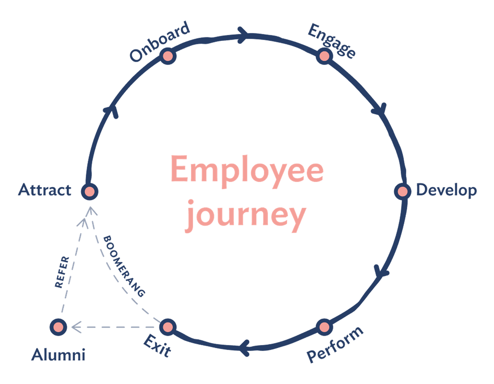

Looking for a group of like-minded people committed to push you to the highest level of success ? Take the opportunity to connect with a community that could change your career. Our seniors and alumni are always there to help you on your way towards success.
How to design a strong employee experience?
Employee experience is a worker's perceptions about his or her journey through all the touchpoints at a particular company, starting with job candidacy through to the exit from the company

Attraction / Recruitment:
This stage is critical because it’s the first chance you have to introduce your company culture and establish trust with a potential hire.
Onboarding:
The onboarding program, which is meant to get new hires up and running smoothly, is critical because it can have a significant impact on an employee’s tenure.
Exit:
Even with your best efforts, you can assume that most employees will leave your organization at some point.
Determine your top priority:
First, you need to identify what aspect of the employee experience your organization should focus on.
Start capturing data:
Once you’ve determined your top priority, the most important thing is to start capturing feedback.
Build in linkages:
If you want to build a comprehensive understanding of the entire employee lifecycle, it’s important to build in linkages to and from other content and data.
Empower action:
Employee experience surveys give you a lot of valuable information. But there’s no point in having it if you don’t use it to take action.
Hearing from the experienced will always boost something within you and always helps you to guide in a right path.
To know the Experience of your fellow seniors